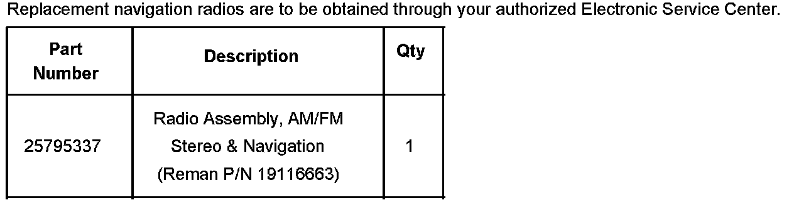
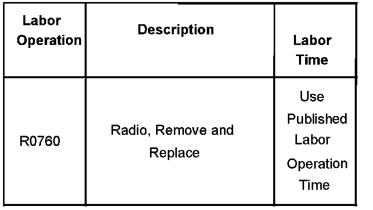

Navigation System - Blank Screen/No Power
Bulletin No.: 06-08-44-038Date: December 05, 2006
TECHNICAL
Subject:
Navigation Screen Goes Blank or Seems to Have No Power (Replace Navigation Radio)
Models:
2007 Cadillac Escalade Models
with Navigation Radio (RPO U3R)
Condition
Some customers may comment that, intermittently, the navigation radio screen is black (no audio, no display, no touch screen and no button functionality). The event only occurs intermittently at start up and does not occur after the vehicle is already running. The condition is sometimes referred to and appears as "No Power" to the radio.
Cause
This condition may be caused by an internal condition with the navigation radio.
Correction
Technicians are to replace the navigation radio with an exchange unit obtained through your authorized Electronic Service Center. Refer to the Radio Replacement (Cadillac) procedure in SI.

Parts Information
Warranty Information

For vehicles repaired under warranty, use the table.

Disclaimer